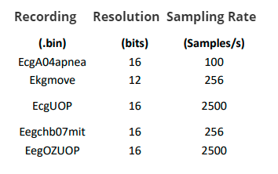

@mainpage Adaptive Lossless Electrocardiogram Compression Algorithm with Decision Regions

by Palaiologos Efstathios
This C implementation of the ALEKGC-DR algorithm is part of an already completed and evaluated study https://nemertes.lis.upatras.gr/jspui/handle/10889/12953 and targets to demonstrate the benefits of the modifications that were applied to the basic ALDC algorithm in order to improve its overall performance when compressing EKGs.
Benchmarks on MIT ARYTMIA DATABASE
https://ieeexplore.ieee.org/document/8418357
| Entropy Encoding | Compression Ratio |
|---|---|
| Proposed: ALDC "3" (Hybrid Single-1 stage Huffman - Multiple Two Stage Huffman with Decision Regions | 3.13 |
| Golomb-Rice Coding | 2.38 |
| Fixed length Coding | 2.38 |
| Fixed length Coding with LMS predictor | 2.28 |
| Two- Stage Huffman Coding | 2.53 |
| Huffman Coding | 1.92 |
| Modified Variable Length Coding | 2.67 |
| Huffman Coding with Fan Algorithm | 2.10 |
| Content-Adaptive Golomb-Rice Coding | 2.77 |
Benchmarks on Custom Dataset under Real-Time Operation of STM32F407VGT(84MHz) :
The Evaluation of the Proposed Compression Algorithms is performed using a Real-Time "Receipt--Compression--Transmission" scenario
